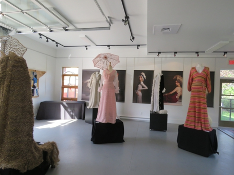
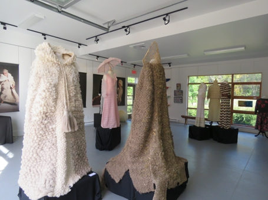
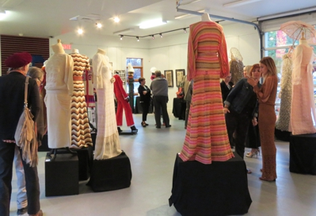
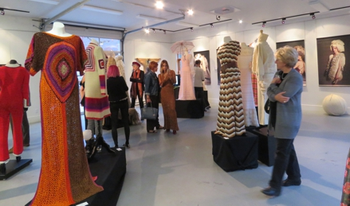
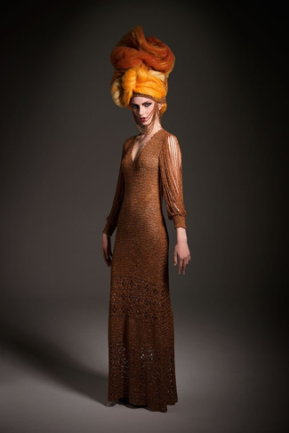
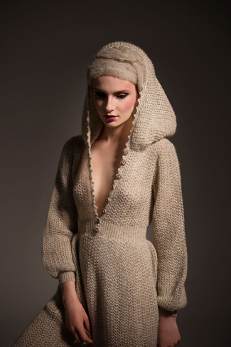
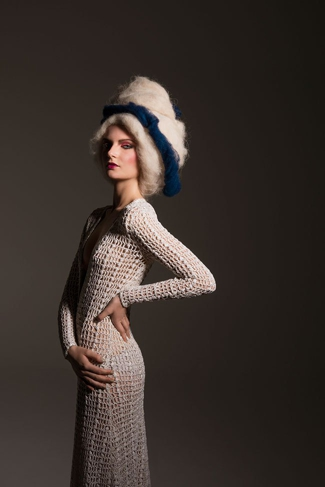
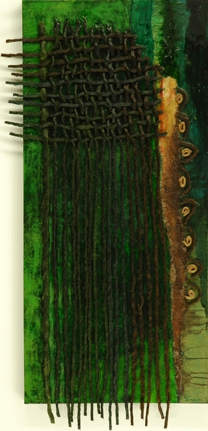
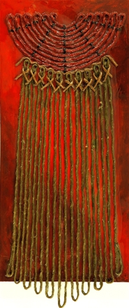
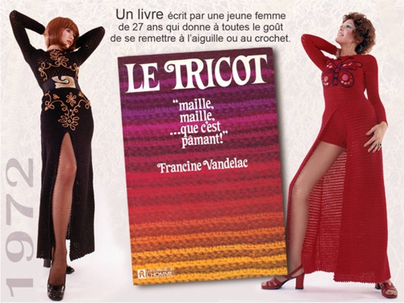

|
|
|
|

Francine Vandelac, après avoir fait des études en arts décoratifs et en design de mode, fut une des pionnières de la mode québécoise. Spécialiste de la maille, elle transforma des techniques anciennes en vêtements mode dans la folie et la turbulence des décennies 60-70.
De l’ Expo 67, qui vit défiler ses tricots sexy en passant par une multitude d’émissions de télé, de sa participation fulgurante aux Montréal-Mode de 73 à 76, mis sur pied par le gouvernement du Québec pour promouvoir les designers québécois aux USA, elle devint vite la coqueluche des journaux canadiens et américains. Invitée par la maison du Québec à New-York à présenter ses collections aux acheteurs américains, le Time magazine de NY lui consacra un article élogieux ( 1973).
Auteure du livre « Maille maille que c’est pâmant » (Éditions de l’Homme 1972), conférencière, chroniqueure pour des séries télé, créatrice de murales textile qui firent l’objet de nombreuses expositions au Canada et USA, elle a entremaillé sa vie de ses nombreuses réalisations.
La designer Francine Vandelac, celle que les medias des années 60-70-80 ont baptisée « La Reine du tricot du Québec » nous a invités à revisiter ces époques en parcourant une parcelle de son exposition rétrospective «Totalement maille » tenue au Musée du costume et textile du Québec en 2014. Vêtements, tableaux, créations bijoux et accessoires textiles étaient en vedette dans le cadre des Journées de la Culture à la Salle Polyvalente de la gare de Piedmont.
CONTACT : fvandelac@gmail.com
Exposition à la Salle Polyvalente de la Gare de Piedmont,organisé par la Municipalité de Piedmont dans les cadre des Journées de la Culture 2016Commissaire de l'exposittion Johanne Martel |
||||
|
||||
|  |  |
|  |  |
| Francine Vandelac, Designer de mode | |
|  |  |  | |
Photo de Pierre Manning |
Photo de Pierre Manning |
Photo de Pierre Manning |




|  |
Conception Johanne Martel www.magadam.com |